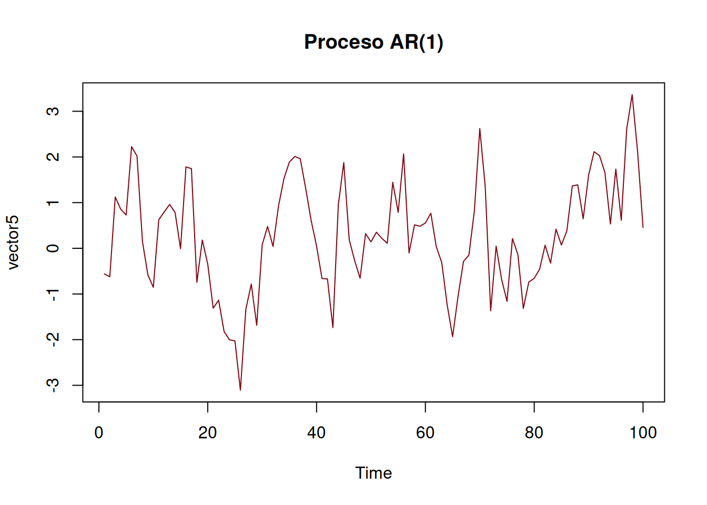

# Cargar librerías necesarias
library(tidyverse) # Para manipulación de datos
library(psych) # Para estadística descriptiva
library(sjmisc) # Para explorar datos
# Configuración
options(scipen = 999) # Evitar notación científicaSesión 1: Introducción a R y Estadística Descriptiva (I)
Taller de Métodos y Técnicas de Investigación I [BORRADOR]
Objetivos de la sesión
Al finalizar esta sesión serás capaz de:
- Navegar en la interfaz de RStudio
- Obtener conocimientos básicos sobre R y su lógica de programación
- Crear y manipular objetos básicos en R (vectores, dataframes)
- Importar datos, cargar paquetes, crear funciones de usuario
- Calcular medidas de tendencia central
- Crear tablas de frecuencia simples y de contingencia
1. Introducción a R y RStudio
¿Qué es R?
R es un lenguaje de programación especializado en análisis estadístico y visualización de datos. Es:
- Gratuito y de código abierto
- Se ha consolidado en las últimas décadas como una herramienta de primer nivel para el análisis estadístico y programación (Fernández-Avilés y Montero, 2024)
- Potente para análisis estadísticos complejos
- Versátil con miles de paquetes disponibles
- Reproducible: tu análisis queda documentado en código :)
La interfaz de RStudio
RStudio tiene 4 paneles principales:
- Editor (arriba izquierda): Donde escribes tu código en scripts
- Consola (abajo izquierda): Donde se ejecuta el código y ves resultados
- Environment (arriba derecha): Muestra tus objetos/datos cargados
- Files/Plots/Help (abajo derecha): Archivos, gráficos, ayuda
Estos paneles se pueden modificar a comodidad, así como el theme del IDE, el tamaño y fuente de la letra y código, etc. Lo importante no es sólo que aprendas a usar las herramientas que nos entrega RStudio, sino que también lo hagas una herramienta propia para usar R de la manera más cómoda posible. Al final, como R es un lenguaje de programación, cada quien puede hablarlo como quiera, con sus mañas y prácticas.
Consejo
Siempre trabaja con scripts (archivos .R o .qmd) en lugar de escribir directo en la consola. Así tu trabajo queda guardado y es reproducible.
2. Conceptos básicos de R
R, ante todo, es “un sistema para computación estadística: software de análisis de datos y lenguaje de programación” (Cano en Fernández-Avilés y Montero, 2024). Es ampliamente utilizado en investigación y docencia, pero también ha tomado un lugar importante en la industria y el servicio público.
R nació como una adaptación (en clave software libre y bajo la lógica de programación reproducible) del lenguaje S, complementándolo con un excelente soporte para el uso estadístico (Wickham y Grolemund, 2023). R tiene una lógica de programación llamada Programación Orientada a Objetos (OOP, por sus cifras en inglés: object-oriented programming), el cual permite un polimorfismo muy útil y versatil para programación estadística y que se relaciona con la encapsulación de objetos (Wickham, 2019). Más allá de tecnicismos, veremos todo esto en el curso, con ejemplos aplicados a sus investigaciones del Magíster.
Preparación
Operaciones básicas
R funciona como una calculadora avanzada:
# Operaciones aritméticas
5 + 3[1] 810 - 2[1] 84 * 6[1] 2420 / 4[1] 52^3 # Potencia[1] 8# R respeta el orden de operaciones
(5 + 3) * 2[1] 16Crear objetos
En R guardamos información en objetos usando <-:
# Crear un objeto numérico
edad <- 25
edad[1] 25# Crear un vector (secuencia de valores)
edades <- c(23, 25, 28, 30, 22, 27)
edades[1] 23 25 28 30 22 27# Operaciones con vectores
mean(edades) # Promedio[1] 25.83333length(edades) # Largo del vector[1] 6
Nota importante
Los nombres de objetos: - Pueden contener letras, números, . y _ - NO pueden empezar con números - R distingue entre mayúsculas y minúsculas (edad ≠ Edad), lo que se suele conocer como un lenguaje key-sensitive
Crear objetos: vectores y matrices
Guardar objetos también nos permite hacer operaciones matemáticas más complejas, por ejemplo para el uso de una calculadora de algebra lineal. También se pueden hacer simulaciones, con una distribución deseada, para hacer más interesante nuestras operaciones. Veamos primero la creación de objetos y luego operaciones más complejas
# a) Creación de un vector de números naturales del 1 al 8
vector1 <- c(1, 2, 3, 4, 5, 6, 7, 8, 9, 11, 25, 44, 36, 20, 50, 88)
vector1
## [1] 1 2 3 4 5 6 7 8 9 11 25 44 36 20 50 88
# b) Creación de un vector con números reales comprendidos entre 1 y 6
set.seed(123)
vector2 <- runif(60, 1, 6)
vector2
## [1] 2.437888 4.941526 3.044885 5.415087 5.702336 1.227782 3.640527 5.462095
## [9] 3.757175 3.283074 5.784167 3.266671 4.387853 3.863167 1.514623 5.499125
## [17] 2.230439 1.210298 2.639604 5.772518 5.447697 4.464017 4.202534 5.971349
## [25] 4.278529 4.542652 3.720330 3.970710 2.445799 1.735568 5.815121 5.511495
## [33] 4.453526 4.977337 1.123068 3.388980 4.792298 2.082040 2.590905 2.158129
## [41] 1.714000 3.072732 3.068622 2.844227 1.762224 1.694030 2.165170 3.329812
## [49] 2.329863 5.289139 1.229156 3.211000 4.994624 1.609496 3.804740 2.032657
## [57] 1.637658 4.766539 5.475227 2.872314
# c) Creación de un vector con números que provienen de una distribución normal
vector3 <- rnorm(30, 0, 2)
vector3
## [1] 0.85292844 -0.59014297 1.79025132 1.75626698 1.64316216 1.37728051
## [7] 1.10783531 -0.12382342 -0.61192533 -0.76094200 -1.38941396 -0.41583456
## [13] -2.53079270 4.33791193 2.41592400 -2.24621717 -0.80576967 -0.93331071
## [19] 1.55993024 -0.16673813 0.50663703 -0.05709351 -0.08574091 2.73720457
## [25] -0.45154197 3.03294121 -3.09750561 1.16922750 0.24770849 0.43188314
# d) Creación de un vector con caracteres (letras)
vector4 <- c("Lima", "Ucayali", "Loreto", "San Juan", "Pucallpa")
vector4
## [1] "Lima" "Ucayali" "Loreto" "San Juan" "Pucallpa"
# e) Creación de un vector que combine números y texto
vector5 <- c("rojo", 3, "Azul", 7, "morado", 10)
vector5
## [1] "rojo" "3" "Azul" "7" "morado" "10"
#OTRO CASOS CON VECTORES
#a) Crea un vector con los primeros 20 números pares.
vector1 <- seq(2, 40, by = 2)
vector1
## [1] 2 4 6 8 10 12 14 16 18 20 22 24 26 28 30 32 34 36 38 40
#b) Simular 50 valores entre 5 y 15, pero solo números enteros (valores repetidos).
vector2 <- sample(5:15, 50, replace = TRUE)
vector2
## [1] 11 7 11 10 14 9 9 12 7 14 6 14 6 14 10 8 5 10 7 12 7 12 5 11 15
## [26] 11 11 14 10 11 15 14 9 10 12 9 11 15 8 7 13 11 10 14 13 11 6 7 12 8
# Simular 50 valores entre 5 y 150, pero solo números enteros (valores no repetidos).
vector2 <- sample(5:150, 50, replace = FALSE)
vector2
## [1] 115 43 5 34 98 20 92 58 24 108 97 56 112 26 46 63 88 15 125
## [20] 59 12 50 89 113 70 111 81 129 74 76 48 36 40 49 18 145 91 37
## [39] 44 138 14 93 121 86 13 11 105 62 65 78
# Crear un vector con categorías de satisfacción (Baja, Media, Alta) y conviértelo en
#factor ordenado.
vector3 <- factor(sample(c("Baja", "Media", "Alta"), 30, replace = TRUE),
levels = c("Baja", "Media", "Alta"),
ordered = TRUE)
vector3
## [1] Alta Media Alta Media Alta Baja Baja Baja Baja Alta Media Baja
## [13] Media Baja Alta Alta Baja Media Alta Baja Alta Media Baja Baja
## [25] Baja Baja Baja Alta Media Media
## Levels: Baja < Media < Alta
# Generar un vector con los primeros 15 valores de una progresión geométrica de razón 3.
vector4 <- 2*(3/11)^(0:14)
vector4
## [1] 2.00000000000000 0.54545454545455 0.14876033057851 0.04057099924869
## [5] 0.01106481797691 0.00301767763007 0.00082300299002 0.00022445536091
## [9] 0.00006121509843 0.00001669502684 0.00000455318914 0.00000124177886
## [13] 0.00000033866696 0.00000009236372 0.00000002519010
# Generar 100 valores de un proceso AR(1):
#Xt=0.7Xt-1+et donde et~N(0,1)
set.seed(123)
vector5 <- numeric(100)
vector5[1] <- rnorm(1)
for (t in 2:100) {
vector5[t] <- 0.7 * vector5[t-1] + rnorm(1)
}
vector5
## [1] -0.560475647 -0.622510442 1.122951005 0.856574095 0.728889601
## [6] 2.225287708 2.018617602 0.147971086 -0.583273091 -0.853953134
## [11] 0.626314604 0.798234050 0.959535285 0.782357416 -0.008190944
## [16] 1.781179476 1.744676112 -0.745343879 0.179615187 -0.347060777
## [21] -1.310766250 -1.135511290 -1.820862351 -2.003494875 -2.027485680
## [26] -3.105933287 -1.336366256 -0.782083262 -1.685595220 0.073898267
## [31] 0.478193008 0.039663623 0.922890197 1.524156625 1.888490719
## [36] 2.010583758 1.961326284 1.311016688 0.611749018 0.047753312
## [41] -0.661279661 -0.670813041 -1.734965480 0.954480129 1.876098089
## [46] 0.190160079 -0.269772780 -0.655496300 0.321117709 0.141413330
## [51] 0.352307845 0.218068736 0.109777658 1.445446645 0.786041666
## [56] 2.066699770 -0.102062965 0.513169674 0.483073016 0.554092680
## [61] 0.767504359 0.034929598 -0.308756665 -1.234705049 -1.936084761
## [66] -1.051730691 -0.288001705 -0.148596967 0.818249591 2.622859399
## [71] 1.344970414 -1.367689586 0.048355814 -0.675351693 -1.160754801
## [76] 0.213043009 -0.135642901 -1.315667743 -0.739663940 -0.656656121
## [81] -0.453895099 0.067553832 -0.323372349 0.418015904 0.072124571
## [86] 0.382269164 1.364427428 1.390280690 0.647264898 1.601893047
## [91] 2.114828989 2.028777252 1.658875811 0.533306992 1.733967343
## [96] 0.613517553 2.616795280 3.364367322 2.119356766 0.457128836
#--Graficar la serie de tiempo
plot.ts(vector5, col="#7F000D", main="Proceso AR(1)")
¿Y si quisieramos operaciones con vectores? Hagamos un ejercicio. Sean los vectores \(A\) y \(B\), ambos con la misma cantidad de números aleatorios. El vector \(A\) contiene datos que provienen de una distribución chi-cuadrada con 3 grados de libertad (gl), mientras que el vector \(B\) contiene datos que provienen de una distribución uniforme definida en el intervalo \([3, 5]\). Entonces, hallemos con R la solución a los siguientes cálculos:
\(2A+5B\)
\(\sin(A)+\cos(B)−\tan(A+B)\)
\(\sqrt[3]{A} + \exp(B) - 4B^2\)
\(\log(A+1)+B^3-10 \sqrt{B}\)
# Definimos objetos para la creación de los objetos según instrucciones
n=80
A<-rchisq(n,3) # Distribución Chi-Cuadrada con 3 gl
B<-runif(n,3,5) # Distribución uniforme [3,5]
# Hallar los siguientes cálculos:
#1) 2A+5B
R1 <- 2*A + 5*B
R1
## [1] 19.69210 23.03420 26.69313 25.70334 28.35293 26.64890 24.68047 28.09814
## [9] 19.37783 27.30493 19.08945 26.21774 21.28977 21.04553 19.67761 29.61104
## [17] 30.46180 22.50579 29.14007 28.82716 37.59187 23.24578 20.10291 26.05125
## [25] 21.31597 28.21674 27.54909 28.87870 22.17543 26.48466 32.92355 22.76607
## [33] 23.45849 19.91794 32.04690 22.38126 22.65389 34.35684 24.66019 21.24424
## [41] 20.95409 24.56103 19.48345 32.42303 23.86838 27.14611 24.88628 25.74374
## [49] 23.17346 36.48939 22.85570 29.78744 18.20893 27.98537 19.52830 24.42174
## [57] 20.80129 25.62571 33.99841 20.50393 23.86187 24.03436 26.62792 30.83077
## [65] 36.04283 17.73191 35.57557 28.77954 16.43000 25.45428 35.16100 26.46746
## [73] 24.87297 23.24329 20.85788 22.64388 31.20013 19.58654 24.27057 19.14470
#2) sin(A)+cos(B)−tan(A+B)
R2 <- sin(A) + cos(B) - tan(A + B)
R2
## [1] -3.69871781 0.52932773 -0.14649449 1.44602908 0.54403329
## [6] -1.55641966 -1.55866936 0.99389017 -4.40833050 -2.08558457
## [11] 128.22307375 -1.87754483 -0.05757828 0.73500217 -4.53203936
## [16] -0.27794495 0.18359820 -0.74062578 -2.06599699 -15.61964420
## [21] 1.36081585 -1.65275479 -4.32443745 0.24815190 -8.00620676
## [26] -0.66222329 -0.68928017 -0.99627362 0.15563453 1.24336597
## [31] -1.17243861 -13.95459475 -1.81618294 2.53138309 0.83183601
## [36] 1.51603274 1.42600605 -0.03628195 0.63919508 1.52939188
## [41] 1.56304102 1.29568028 -3.20067386 -0.94459629 -2.91566325
## [46] 0.52023905 -0.82360904 0.98140771 2.77398261 0.20811657
## [51] 3.15124846 -1.54676948 -1.51491217 -2.06577654 -10.66771053
## [56] 2.12058688 3.77380148 0.65734503 -1.12366287 1.03422297
## [61] -2.55867067 1.58528319 -4.20732464 0.99172732 -2.79511002
## [66] -1.75380189 1.05139758 -15.01869886 -1.04601754 2.21332123
## [71] -0.11138087 -0.59958851 1.09408425 20.66156069 6.44208116
## [76] 0.71104716 -1.59454903 2.76693085 -0.76535693 -5.73788804
#3) raiz_cúbica(A) + exp(B) - 4B^2
R3 <- A^(1/3) + exp(B) - 4*B^2
R3
## [1] -14.255620 -12.110377 -14.713197 24.448582 40.082941 -4.685214
## [7] -13.257257 48.844148 -15.023519 -1.559712 -15.297013 -8.502851
## [13] -15.042858 -15.122710 -14.516771 -3.273798 8.692007 -14.985719
## [19] 25.424846 6.314224 12.115420 -14.949348 -13.220614 2.938968
## [25] -7.457513 -12.623203 -14.258828 -14.402407 -14.672829 28.812485
## [31] 18.051722 9.275726 -14.927720 -15.235218 44.648938 -10.779485
## [37] -9.764369 -14.347868 -3.604389 -14.440643 -14.846226 4.307060
## [43] -14.553812 17.838086 -14.830561 18.948512 -10.807368 10.826627
## [49] 1.652100 -9.591720 -1.063778 -13.970162 -15.364066 5.902215
## [55] -15.122612 17.489365 -14.008778 4.131836 36.721962 -15.157534
## [61] -14.901083 3.105458 -10.625458 20.931845 44.227299 -15.332014
## [67] -9.074260 5.658878 -15.739576 47.537372 -13.786626 -14.475961
## [73] 3.919048 13.808245 -13.182624 -12.680460 -13.551670 -15.134584
## [79] -12.550918 -15.319228
#4) log(A+1)+B^3-10raiz(B)
R4 <- log(A + 1) + B^3 - 10*sqrt(B)
R4
## [1] 28.49843 35.54705 20.20142 84.47064 97.01486 51.37850 31.29607
## [8] 103.09007 23.84246 56.29000 16.25668 44.25693 16.14260 19.61268
## [15] 27.11649 53.66290 69.41751 20.07700 85.58413 66.64177 73.27157
## [22] 19.07572 32.60644 62.42528 46.62661 33.17041 25.32883 14.64705
## [29] 24.48755 88.19187 79.11806 69.75788 19.55993 17.32759 100.53653
## [36] 39.30442 41.70714 20.98362 53.15140 26.61957 23.86616 64.07605
## [43] 27.05512 78.89942 16.14349 79.69590 38.98565 71.55383 60.66658
## [50] 41.35389 56.95591 11.82915 22.39737 66.13017 22.62734 78.09871
## [57] 29.10722 63.90620 94.87808 16.92526 18.02416 62.56160 39.31798
## [64] 81.71854 100.42864 13.96516 42.61457 65.86200 14.40384 101.84851
## [71] 26.66225 14.02985 63.61271 74.47058 32.46619 33.79005 28.79113
## [78] 14.83907 33.95460 20.25958¡¡¿¿¿Y matrices??!! Podemos hacerlo de distintas maneras:
# 1️⃣ Declaración de Matrices en R (Forma Manual))
A <- matrix(c(6,5,4,1.2,6,4,7,7,8,2.5,1.15,6,4,5,7,3), nrow=4, byrow=TRUE)
A
## [,1] [,2] [,3] [,4]
## [1,] 6 5.0 4.00 1.2
## [2,] 6 4.0 7.00 7.0
## [3,] 8 2.5 1.15 6.0
## [4,] 4 5.0 7.00 3.0
B <- matrix(c(5, sqrt(7), exp(2), 7, -1/7, 6), nrow=2, byrow=TRUE)
B
## [,1] [,2] [,3]
## [1,] 5 2.6457513 7.389056
## [2,] 7 -0.1428571 6.000000
#2️⃣ Declaración de Matrices Aleatoriass
A <- matrix(rnorm(36), nrow=6) # 6×6 con distribución normal estándar
A
## [,1] [,2] [,3] [,4] [,5] [,6]
## [1,] 0.09049665 -1.53290200 1.54758106 0.9625280 0.07455118 -0.2656516
## [2,] 1.59850877 -0.52111732 -0.13315096 0.6843094 0.42816676 0.1181445
## [3,] -0.08856511 -0.48987045 -1.75652740 -1.3952743 0.02467498 0.1340386
## [4,] 1.08079950 0.04715443 -0.38877986 0.8496430 -1.66747510 0.2210195
## [5,] 0.63075412 1.30019868 0.08920722 -0.4465572 0.73649596 1.6408462
## [6,] -0.11363990 2.29307897 0.84501300 0.1748027 0.38602657 -0.2190504
B <- matrix(runif(25, 7, 20), nrow=5) # 5×5 con distribución uniforme en [7,20]
B
## [,1] [,2] [,3] [,4] [,5]
## [1,] 14.36754 11.782647 19.705986 8.563083 18.626350
## [2,] 13.37082 18.361349 14.575617 8.148723 7.415631
## [3,] 18.42276 8.967396 13.845671 18.449933 10.083986
## [4,] 17.56708 10.663552 7.790169 13.608818 15.924375
## [5,] 18.10330 15.667167 19.597505 11.387435 9.935640
C <- diag(rnorm(16,6,1.75), nrow=4) # 4×4 con valores en la diagonal
C
## [,1] [,2] [,3] [,4]
## [1,] 5.174153 0.000000 0.000000 0.000000
## [2,] 0.000000 7.481793 0.000000 0.000000
## [3,] 0.000000 0.000000 7.620099 0.000000
## [4,] 0.000000 0.000000 0.000000 5.438546
D <- diag(1, nrow=5) # Matriz identidad de orden 5
D
## [,1] [,2] [,3] [,4] [,5]
## [1,] 1 0 0 0 0
## [2,] 0 1 0 0 0
## [3,] 0 0 1 0 0
## [4,] 0 0 0 1 0
## [5,] 0 0 0 0 1
E <- diag(0, nrow=5) # Matriz nula de orden 5
E
## [,1] [,2] [,3] [,4] [,5]
## [1,] 0 0 0 0 0
## [2,] 0 0 0 0 0
## [3,] 0 0 0 0 0
## [4,] 0 0 0 0 0
## [5,] 0 0 0 0 0
G <- diag(rnorm(5)) # Matriz diagonal
G[upper.tri(G)] <- rnorm(5) # Convertir en matriz triangular superior
G
## [,1] [,2] [,3] [,4] [,5]
## [1,] -0.77225 0.3206011 -1.3697758 1.3855455 -1.3697758
## [2,] 0.00000 0.6809156 0.2912297 0.1690452 0.2912297
## [3,] 0.00000 0.0000000 -0.2075835 0.3206011 1.3855455
## [4,] 0.00000 0.0000000 0.0000000 0.8374265 0.1690452
## [5,] 0.00000 0.0000000 0.0000000 0.0000000 -0.2918737
G <- diag(rnorm(5))
G[lower.tri(G)] <- rnorm(5) # Convertir en matriz triangular inferior
G
## [,1] [,2] [,3] [,4] [,5]
## [1,] 1.06892128 0.0000000 0.00000000 0.0000000 0.0000000
## [2,] -1.43983706 -1.5858892 0.00000000 0.0000000 0.0000000
## [3,] -1.00616615 -0.5739455 -0.38385009 0.0000000 0.0000000
## [4,] -0.94035503 -1.4398371 -0.94035503 0.8648344 0.0000000
## [5,] 0.05345133 -1.0061661 0.05345133 -0.5739455 0.5612503Con ello, podemos hacer las siguiente operaciones:
#3️⃣ Transpuesta de una Matriz
A <- matrix(rnorm(36,3,0.2), nrow=9)
A
## [,1] [,2] [,3] [,4]
## [1,] 3.044110 2.784029 3.010454 2.600387
## [2,] 2.833097 3.041931 3.122176 3.229956
## [3,] 2.973929 2.739416 2.941241 3.287172
## [4,] 3.113466 2.926038 2.464057 2.904112
## [5,] 3.241693 2.871413 2.752431 3.457821
## [6,] 3.025444 3.218233 3.115314 2.392444
## [7,] 2.809718 3.067319 3.227178 2.791295
## [8,] 2.867497 2.937034 3.138828 3.049301
## [9,] 3.068919 2.964186 3.057314 3.014013
t(A) # Transpuesta
## [,1] [,2] [,3] [,4] [,5] [,6] [,7] [,8]
## [1,] 3.044110 2.833097 2.973929 3.113466 3.241693 3.025444 2.809718 2.867497
## [2,] 2.784029 3.041931 2.739416 2.926038 2.871413 3.218233 3.067319 2.937034
## [3,] 3.010454 3.122176 2.941241 2.464057 2.752431 3.115314 3.227178 3.138828
## [4,] 2.600387 3.229956 3.287172 2.904112 3.457821 2.392444 2.791295 3.049301
## [,9]
## [1,] 3.068919
## [2,] 2.964186
## [3,] 3.057314
## [4,] 3.014013
#4️⃣ Traza de una Matriz
A <- matrix(rnorm(25), nrow=5)
A
## [,1] [,2] [,3] [,4] [,5]
## [1,] -1.48378791 1.21791351 -0.2216759 -0.23457505 -2.07988119
## [2,] 1.63172709 -0.82832296 0.3945915 0.87279300 1.37395794
## [3,] -0.67635833 -0.71812572 0.8894268 0.91333624 0.10681370
## [4,] -1.46375788 -0.04448748 0.8687173 0.39722919 -0.02650367
## [5,] -0.02547748 -1.06184814 -0.6720418 -0.09698557 -0.23364408
traza <- sum(diag(A))
paste("La traza es:", traza)
## [1] "La traza es: -1.25909891680289"
#5️⃣ Suma de Matrices
A <- matrix(rnorm(30), nrow=6)
B <- matrix(rnorm(30,5,2), nrow=6)
A + B # Suma de matrices
## [,1] [,2] [,3] [,4] [,5]
## [1,] 2.070677 5.674789 7.332295 5.819102 4.4218596
## [2,] 6.797006 3.600217 5.282065 6.588906 5.2436218
## [3,] 1.209273 6.333353 6.720439 4.798674 0.9434001
## [4,] 3.167788 4.815598 2.326593 5.370866 2.3541586
## [5,] 5.640490 4.864771 4.099813 5.846048 5.9530386
## [6,] 2.535960 5.828734 7.136285 4.246691 8.3280428
#6️⃣ Producto de un Escalar por una Matriz
C <- matrix(rnorm(40,6,1), nrow=8)
sqrt(7) * C # Producto con un escalar
## [,1] [,2] [,3] [,4] [,5]
## [1,] 16.08303 16.51992 14.51782 16.33740 17.35173
## [2,] 14.63379 13.22912 13.19817 12.72343 16.73229
## [3,] 11.30045 18.89441 11.35979 15.73099 17.72055
## [4,] 18.69264 10.62822 20.58891 11.41730 13.16903
## [5,] 17.14521 15.80967 11.78878 14.24842 15.42931
## [6,] 16.23830 15.32379 15.38026 16.84572 13.86509
## [7,] 17.96189 13.26302 15.53936 9.37299 15.20537
## [8,] 13.68626 14.79632 13.01599 15.33389 18.39506
A <- matrix(runif(42), nrow=7)
B <- matrix(runif(42,4,6), nrow=7)
P <- 2.35 * A + log(13) * B # Combinación lineal de matrices
P
## [,1] [,2] [,3] [,4] [,5] [,6]
## [1,] 13.47663 14.25929 13.82812 15.09279 11.70540 14.59548
## [2,] 16.20203 11.45008 13.54358 11.80367 16.62356 13.79231
## [3,] 14.20694 16.52816 12.86935 12.91500 14.21301 13.11315
## [4,] 13.24659 16.04601 13.68651 14.02032 14.93595 11.70117
## [5,] 14.32942 14.05038 13.32676 12.03458 15.91931 12.76438
## [6,] 11.88001 15.53602 13.05379 14.84587 15.30746 13.39807
## [7,] 12.65452 15.92107 15.43912 14.99238 15.64276 13.27560
#7️⃣ Multiplicación de Matrices
A <- matrix(runif(30,1,3), nrow=5) # 5×6
B <- matrix(runif(30,2,9), nrow=6) # 6×5
A %*% B # Producto de matrices
## [,1] [,2] [,3] [,4] [,5]
## [1,] 54.75619 57.04299 58.38904 74.89661 63.80753
## [2,] 53.03199 58.17523 48.83200 69.80488 62.63474
## [3,] 64.24920 67.36303 54.95997 81.96668 71.76121
## [4,] 69.21387 74.19012 57.16532 87.87814 74.00812
## [5,] 61.88446 62.14712 57.98378 82.12525 65.21642
(1/2*A) %*% (exp(3)*B)
## [,1] [,2] [,3] [,4] [,5]
## [1,] 549.9038 572.8696 586.3876 752.1693 640.8042
## [2,] 532.5880 584.2404 490.4084 701.0343 629.0262
## [3,] 645.2398 676.5113 551.9503 823.1724 720.6812
## [4,] 695.0989 745.0742 574.0981 882.5398 743.2464
## [5,] 621.4913 624.1292 582.3177 824.7649 654.9534
(1/17*B) %*% (4*A)
## [,1] [,2] [,3] [,4] [,5] [,6]
## [1,] 13.736128 14.181174 13.613064 17.96612 17.19283 17.89083
## [2,] 9.578455 9.874332 9.587239 11.66554 12.11357 11.81713
## [3,] 10.883822 10.379757 10.621954 12.39297 13.08647 13.44568
## [4,] 12.453547 13.984342 12.046658 13.62633 15.72787 15.56274
## [5,] 9.962515 10.687997 9.492623 10.90207 12.46591 12.55654
## [6,] 12.510982 12.982812 12.958671 15.35784 15.21049 15.20145
#8️⃣ Determinante de una Matriz
A <- matrix(runif(36,1,10), nrow=6)
A
## [,1] [,2] [,3] [,4] [,5] [,6]
## [1,] 4.648275 6.655643 9.270593 2.889983 1.652222 4.616325
## [2,] 1.653687 3.954148 5.758889 4.382591 7.218909 6.837007
## [3,] 9.583828 2.250185 4.347809 2.866289 3.582619 9.246752
## [4,] 2.954654 9.231915 1.592275 5.133167 2.344712 2.949959
## [5,] 4.650627 6.392044 8.689329 3.173520 9.751888 5.931990
## [6,] 6.631015 7.746464 5.593702 2.068213 4.694630 7.480454
det(A) # Determinante de la matriz
## [1] 58219.58
#9️⃣ Rango de una Matriz
A <- matrix(runif(25,10,36), nrow=5)
A
## [,1] [,2] [,3] [,4] [,5]
## [1,] 20.32840 27.65459 30.50027 21.68470 12.85484
## [2,] 12.44404 32.52092 28.01576 29.92033 35.18232
## [3,] 26.50731 30.79213 25.45110 10.67854 20.01516
## [4,] 10.06445 13.50991 13.22030 15.07446 32.32338
## [5,] 15.47360 20.07495 24.43203 32.91210 33.07200
qr(A)$rank # Rango de la matriz
## [1] 5
B <- matrix(runif(28,9,100), nrow=7)
B
## [,1] [,2] [,3] [,4]
## [1,] 53.50733 58.33913 43.77830 89.62371
## [2,] 74.34635 46.90581 81.99863 95.83720
## [3,] 53.29021 99.89832 27.01105 12.67465
## [4,] 98.97251 32.26625 95.12238 53.91907
## [5,] 14.89235 55.21669 40.45620 29.57180
## [6,] 23.34731 16.18638 56.50657 87.15083
## [7,] 80.46672 83.04382 19.16361 57.31515
qr(B)$rank
## [1] 4
#🔟 Inversa de una Matriz
A <- matrix(runif(36,0,10), nrow=6)
A
## [,1] [,2] [,3] [,4] [,5] [,6]
## [1,] 0.04638151 1.1067879 6.2490554 1.9071746 1.4377810 2.4872636
## [2,] 2.77560080 7.0375381 4.4024185 7.2708647 8.6596708 6.1495395
## [3,] 3.25203143 9.3902124 8.0134530 8.2669005 0.8256106 0.3175732
## [4,] 5.88706277 3.1116902 2.7928381 5.1072108 2.4457068 1.4642354
## [5,] 2.49684701 0.7849293 5.7071319 5.6772617 9.8154316 7.0307297
## [6,] 0.43117281 3.2174409 0.4212801 0.0115582 5.7758128 0.6556071
inv <- solve(A) # Inversa de la matriz
inv
## [,1] [,2] [,3] [,4] [,5] [,6]
## [1,] 0.1635868 0.03138115 -0.14644118 0.29197919 -0.14467915 0.05539374
## [2,] 0.1412754 0.19436903 -0.06953814 0.03911732 -0.23043826 0.05839836
## [3,] 0.1668564 -0.10402786 0.02702846 0.01917559 0.02043062 0.06773001
## [4,] -0.3841904 -0.13172257 0.23361634 -0.17602226 0.29240060 -0.16263677
## [5,] -0.1351900 -0.14342385 0.07646570 -0.05553539 0.16740642 0.14991882
## [6,] 0.2896546 0.35819487 -0.25756590 0.09604393 -0.26706783 -0.15914120
round(A %*% inv) # Verificación: debe aproximarse a la matriz identidad
## [,1] [,2] [,3] [,4] [,5] [,6]
## [1,] 1 0 0 0 0 0
## [2,] 0 1 0 0 0 0
## [3,] 0 0 1 0 0 0
## [4,] 0 0 0 1 0 0
## [5,] 0 0 0 0 1 0
## [6,] 0 0 0 0 0 1Incluso podríamos calcular MCO matricialmente1. Solo tendríamos que seguir la expresión que se obtiene al derivar los estimadores MCO con notación matricial, es decir, \[ \hat{\beta} = (X^\top X)^{-1} X^\top y \] donde nuestra variable dependiente es un vector-columna de \(n\times 1\) dimensiones; los parámetros \(\beta\) también son un vector columna \(k+1\times 1\) dimensiones; las variables independientes son una matriz de \(n\times k+1\) dimensiones; y los residuos del modelo son de \(n\times 1\) dimensiones. De manera tal que se tiene \[ Y_{n\times 1} = \begin{bmatrix} Y_1 \\ Y_2 \\ \vdots \\ Y_n \end{bmatrix}, \quad X_{n\times (k+1)} = \begin{bmatrix} 1 & X_{11} & a_{12} & \cdots & a_{1k} \\ 1 & X_{21} & a_{22} & \cdots & a_{2k} \\ \vdots & \vdots & \vdots & \ddots & \vdots \\ 1 & X_{n1} & a_{n2} & \cdots & a_{nk} \end{bmatrix}, \quad \beta_{k+1\times 1} = \begin{bmatrix} \beta_0 \\ \beta_1 \\ \vdots \\ \beta_k \end{bmatrix}, \quad U_{n\times 1} = \begin{bmatrix} U_1 \\ U_2 \\ \vdots \\ U_n \end{bmatrix} \]
Simulemos, entonces, un caso conocido: la ecuación de Mincer. Un ejemplo relativamente básico de esta sería el siguiente: \[ \ln \text{salario}_i = \ln \beta_0 + \beta_1 \text{educ}_i +\beta_2 \text{exp}_i+\beta_3 \text{exp}_i^2+ \beta_4 \text{dummy-mujer}_i + u_i \] donde la variable dependiente es salario del individuo \(i\), a la cual se le aplica un logaritmo natural; \(\beta_0\) es el intercepto (salario de alguien sin educación ni experiencia (ni mujer)); \(\text{educ}_i\) es la variable que registra los años de escolaridad del individuo \(i\); \(\text{exp}_i\) es la variable que contiene la experiencia laboral del individuo \(i\); \(\text{dummy-mujer}_i\) es una variable que identifica si \(i\) es mujer o no; y \(u_i\) es el término de error. Veamos cómo podríamos hacer esto en R con una simulación:
# MCO "a mano" (solo betas) + comparación con lm()
set.seed(2025)
# 1) Simulación tipo Mincer
n <- 1000
esc <- pmax(0, round(rnorm(n, 12, 2)))
exp <- pmax(0, round(rnorm(n, 15, 5)))
mujer <- rbinom(n, 1, 0.45)
b0 <- 1.5; b_esc <- 0.08; b_exp <- 0.10; b_exp2 <- -0.002; b_muj <- -0.20
eps <- rnorm(n, 0, 0.30)
y <- b0 + b_esc*esc + b_exp*exp + b_exp2*(exp^2) + b_muj*mujer + eps # log ingreso
# 2) Matriz de diseño y vector
X <- cbind(1, esc, exp, exp^2, mujer) # Matriz X
colnames(X) <- c("(Intercept)", "esc", "exp", "exp2", "mujer")
# 3) Betas por álgebra matricial: β̂ = (X'X)^(-1) X'y
beta_hat <- solve(t(X) %*% X) %*% (t(X) %*% y)
# 4) Comparación con lm()
beta_lm <- coef(lm(y ~ esc + exp + I(exp^2) + mujer))
# 5) Mostrar lado a lado
out <- cbind(beta_manual = as.numeric(beta_hat), beta_lm = as.numeric(beta_lm))
rownames(out) <- colnames(X)
round(out, 6)
## beta_manual beta_lm
## (Intercept) 1.497691 1.497691
## esc 0.079347 0.079347
## exp 0.104212 0.104212
## exp2 -0.002206 -0.002206
## mujer -0.197648 -0.197648Tipos de datos
No obstante, para todo ello, ¡hay que aprender R! Probablemente muchxs de ustedes ya saben algo de R. A su vez, si saben R pero no como derivar MCO no se preocupen, no es necesario saber esto para hacer una regresión en R. Es más, como vieron, lm() que es la función más básica para realizar regresiones lineales en R realiza la operación matricial que hicimos en una sola línea de código (lm(y ~ esc + exp + I(exp^2) + mujer)). Todo lo anterior, por tanto, fueron ejemplos de cosas que se pueden hacer en R, utilizándolo más “en bruto” y para que puedan visualizar su potencial.
Pero volvamos a R. Los objetos de R tienen distintas “clases”. Para efectos del curso, podemos pensar esto como la naturaleza de variables, i.e., como variables cuantitativas (discretas y continuas) y cualitativas (ordinales y nominales). Los objetos de R tienen categorías similares. Pero también tienen combinaciones, como los objetos dbl+lbl, que son numéricos y con etiquetas. Adicionalmente, también podemos encontrar datos de tipo lógico (TRUE y FALSE).
# Numérico
numero <- 42
class(numero)
## [1] "numeric"
# Carácter (texto)
nombre <- "María"
class(nombre)
## [1] "character"
# Lógico
es_estudiante <- TRUE
class(es_estudiante)
## [1] "logical"
# Factor (categorías)
nivel_educacion <- factor(c("Básica", "Media", "Superior", "Media"))
nivel_educacion
## [1] Básica Media Superior Media
## Levels: Básica Media Superior3. Trabajar con DataFrames
Los dataframes son tablas de datos, similares a hojas de Excel. Cada columna es una variable, cada fila es una observación. Es en este formato en el que trabajaremos con bases de datos reales.
Crear un dataframe
# Crear un dataframe desde vectores
estudiantes <- data.frame(
nombre = c("Ana", "Bruno", "Carla", "Diego", "Elena"),
edad = c(23, 25, 24, 26, 23),
carrera = c("Sociología", "Sociología", "Antropología",
"Sociología", "Antropología"),
nota = c(6.5, 5.8, 6.9, 6.2, 7.0)
)
# Ver el dataframe
estudiantes nombre edad carrera nota
1 Ana 23 Sociología 6.5
2 Bruno 25 Sociología 5.8
3 Carla 24 Antropología 6.9
4 Diego 26 Sociología 6.2
5 Elena 23 Antropología 7.0Pero partamos inmediatamente con bases de datos reales. Tomemos la Encuesta Nacional de Empleo, realizada por el INE mes a mes y que agrupa datos trimestrales. Para ello, utilizaremos la función read.csv(), del paquete utils, pues las bases de datos vienen en formato .csv. Una vez que cargamos los datos, exploraremos nuestra base de datos. No obstante, conviene saber antes que los archivos .csv son archivos de texto, que generalmente hay que especificar el delimitador que usa para separar las columnas (; o , comúnmente).
datos <- read.csv("data-sesiones/ene-2025-07-jja.csv", # Ruta
sep=",", # Delimitador
encoding = "UTF-8" # UTF-8 o Latin-1
)
head(datos) # UPS ano_trimestre.mes_central.ano_encuesta.mes_encuesta.region.provincia.tipo.r_p_c.estrato.conglomerado.id_identificacion.hogar.idrph.nro_linea.proveedor.parentesco.sexo.edad.est_conyugal.mig1.mig2_cod.mig3_cod.mig4.mig5_cod.mig6_cod.nacionalidad.orig1. ...
2025;7;2025;6;8;81;1;8111;8100212;35395;188791;1;853676467929;1;1;1;1;57;3;1;;;1;;;152;2;;;3;9;2;2;3;13;2;2;1;;1;;;;;;;7;2;;;2;;2;2;2;1;2;2;2;2;2;;1;1;;7;1;2;1;;88;2011;8;8111;1;2;2;;2;;;;1;1;2;0;;;;;2;2;2;2;2;2;;;;;8;5;40;;;;8;5;40;;;;;;2;;2;;;;;;;2;;;2;;;;;;;;;;;;;;;;;;;;;;;;;;;;;;;;;;;;;;;9;3;2;24;2;1;1;1;3;40;40;0;2;1;7;;0;;2;130 126164801805
2025;7;2025;6;8;81;1;8111;8100212;35395;188792;1;69857573301;2;0;4;1;23;2;1;;;1;;;152;2;;;4;4;1;2;4;8;1;2;1;;1;;;;;;;9;1;;2;;;;;;;;;;;;;2;;;19;1;1;5;;6;2024;8;8111;1;2;1;FACEBOOK;2;;;;;;;;2;;4;;2;2;2;2;2;2;;;;;8;4;32;;;;;;;;;;;;1;3;;;16;;3;5;15;1;1;2;1;0;0;0;1;0;0;0;0;0;0;0;;1;1;;;;;;;;3;;;;;;;;;;;;;;;;;2;3;2;24;2;1;1;1;2;32;35;0;2;2;19;;1;;2;120 770034305589
2025;7;2025;6;8;81;1;8111;8100212;35395;188792;1;733202104071;4;1;1;2;54;2;1;;;1;;;152;2;;;5;5;1;2;5;9;1;2;1;;1;;;;;;;5;2;;;2;;1;1;1;1;1;1;88;1;2;;1;1;;7;2;9;1;;88;2010;8;8111;1;2;2;;2;;;;1;1;1;0;;;;;2;2;2;2;2;2;;;;;888;6;44;;;;888;6;44;;;;;;2;;2;;;;;;;2;;;2;;;;;;;;;;;;;;;;;;;;;;;;;;;;;;;;;;;;;;;8;3;2;25;2;1;1;1;3;44;44;0;1;1;7;;0;;2;117 699995068579
2025;7;2025;6;8;81;1;8111;8100212;35395;188792;1;974021027494;3;0;4;2;21;2;1;;;1;;;152;2;;;2;7;2;1;2;12;2;1;2;2;;;2;;;;;;;;;;;;;;;;;;;;;;;;;;;;;;;;;;;;;;;;;;;;;;;;;;;;;;;;;;;;;;;;;;;;;;;;;;;;;;;;;;;;;2;;;;;;;;;;;;;;;;;;;;;;;4;;;2;2;3;;1;12;2024;5;3;;;;;2;3;2;24;;3;9;15;0;;;;;;;0;;0;;120 145638363174
2025;7;2025;6;8;81;1;8111;8100212;35395;188792;1;408193222712;1;0;3;1;55;2;2;7406;;1;;;152;2;;;2;4;2;2;2;8;2;2;2;2;;;2;;;;;;;;;;;;;;;;;;;;;;;;;;;;;;;;;;;;;;;;;;;;;;;;;;;;;;;;;;;;;;;;;;;;;;;;;;;;;;;;;;;;;2;;;;;;;;;;;;;;;;;;;;;;;22;NO PUDO RENOVAR LA LICENCIA DE CONDUCIR;;1;2;13;PARA RENOVAR LICENCIA DE CONDUCIR LE EXIGEN PAGAR LA PENSION DE ALIMENTOS;1;88;2024;1;1;6;;;;9;2;1;14;;3;9;28;0;;;;;;;0;;0;;130 126164801805
2025;7;2025;6;8;81;1;8111;8100212;35395;188793;1;439623161927;1;0;3;2;30;2;1;;;1;;;152;2;;;5;9;1;2;5;13;1;2;1;;1;;;;;;;2;2;;;1;;1;1;1;2;1;1;1;1;1;5;1;1;;16;5;;1;;9;2024;8;8111;1;2;2;;2;;;;1;1;1;0;;;;;1;2;2;2;2;2;;;;;888;5;36;;;;888;5;36;;;;;;2;;2;;;;2;2;4;1;1;1;2;;;;;;;;;;;;;;;;;;;;;;;;;;;;;;;;;;;;;;;4;4;4;46;2;1;1;1;4;36;36;0;1;1;16;;0;;1;141 845401035688datos <- read.csv("data-sesiones/ene-2025-07-jja.csv", # Ruta
sep=";", # Delimitador
encoding = "Latin-1", # UTF-8 o Latin-1
stringsAsFactors = F # character to factor
)
head(datos) # :D ano_trimestre mes_central ano_encuesta mes_encuesta region provincia tipo
1 2025 7 2025 6 8 81 1
2 2025 7 2025 6 8 81 1
3 2025 7 2025 6 8 81 1
4 2025 7 2025 6 8 81 1
5 2025 7 2025 6 8 81 1
6 2025 7 2025 6 8 81 1
r_p_c estrato conglomerado id_identificacion hogar idrph nro_linea
1 8111 8100212 35395 188791 1 853676467929 1
2 8111 8100212 35395 188792 1 69857573301 2
3 8111 8100212 35395 188792 1 733202104071 4
4 8111 8100212 35395 188792 1 974021027494 3
5 8111 8100212 35395 188792 1 408193222712 1
6 8111 8100212 35395 188793 1 439623161927 1
proveedor parentesco sexo edad est_conyugal mig1 mig2_cod mig3_cod mig4
1 1 1 1 57 3 1 NA NA 1
2 0 4 1 23 2 1 NA NA 1
3 1 1 2 54 2 1 NA NA 1
4 0 4 2 21 2 1 NA NA 1
5 0 3 1 55 2 2 7406 NA 1
6 0 3 2 30 2 1 NA NA 1
mig5_cod mig6_cod nacionalidad orig1 orig2 orig3 curso nivel termino_nivel
1 NA NA 152 2 NA 3 9 2
2 NA NA 152 2 NA 4 4 1
3 NA NA 152 2 NA 5 5 1
4 NA NA 152 2 NA 2 7 2
5 NA NA 152 2 NA 2 4 2
6 NA NA 152 2 NA 5 9 1
estudia_actual edu1 edu2 edu3 edu4 a1 a2 a3 a4 a5 a6 a6_otro a7 a8 b1 b2 b3
1 2 3 13 2 2 1 NA 1 NA NA NA NA NA 7 2 NA
2 2 4 8 1 2 1 NA 1 NA NA NA NA NA 9 1 NA
3 2 5 9 1 2 1 NA 1 NA NA NA NA NA 5 2 NA
4 1 2 12 2 1 2 2 NA NA 2 NA NA NA NA NA NA
5 2 2 8 2 2 2 2 NA NA 2 NA NA NA NA NA NA
6 2 5 13 1 2 1 NA 1 NA NA NA NA NA 2 2 NA
b4 b5 b6 b7a_1 b7a_2 b7a_3 b7b_1 b7b_2 b7b_3 b7b_4 b8 b9 b10 b11_proxy b12
1 NA 2 NA 2 2 2 1 2 2 2 2 2 NA 1 1
2 2 NA NA NA NA NA NA NA NA NA NA NA NA 2 NA
3 NA 2 NA 1 1 1 1 1 1 88 1 2 NA 1 1
4 NA NA NA NA NA NA NA NA NA NA NA NA NA NA NA
5 NA NA NA NA NA NA NA NA NA NA NA NA NA NA NA
6 NA 1 NA 1 1 1 2 1 1 1 1 1 5 1 1
b13_rev4cl_caenes b14_rev4cl_caenes b15_1 b15_2 b16 b16_otro b17_mes b17_ano
1 NA 7 1 2 1 88 2011
2 NA 19 1 1 5 6 2024
3 NA 7 2 9 1 88 2010
4 NA NA NA NA NA NA NA
5 NA NA NA NA NA NA NA
6 NA 16 5 NA 1 9 2024
b18_region b18_codigo b18_varias ocup_honorarios plataformas_digitales
1 8 8111 1 2 2
2 8 8111 1 2 1
3 8 8111 1 2 2
4 NA NA NA NA NA
5 NA NA NA NA NA
6 8 8111 1 2 2
pd_especifique b19 dependencia_segunda sda_pd sda_pd_especifique i1 i2 i3
1 2 NA NA 1 1 2
2 FACEBOOK 2 NA NA NA NA NA
3 2 NA NA 1 1 1
4 NA NA NA NA NA NA
5 NA NA NA NA NA NA
6 2 NA NA 1 1 1
i3_v i4 i5 i6 i7 f7a f7b f7c f7d f7e turno turno_d turno_de turno_h turno_t
1 0 NA NA NA NA 2 2 2 2 2 2 NA NA NA NA
2 NA 2 NA 4 NA 2 2 2 2 2 2 NA NA NA NA
3 0 NA NA NA NA 2 2 2 2 2 2 NA NA NA NA
4 NA NA NA NA NA NA NA NA NA NA NA NA NA NA NA
5 NA NA NA NA NA NA NA NA NA NA NA NA NA NA NA
6 0 NA NA NA NA 1 2 2 2 2 2 NA NA NA NA
c2_1_1 c2_1_2 c2_1_3 c2_2_1 c2_2_2 c2_2_3 c3_1 c3_2 c3_3 turno_cont_d
1 8 5 40 NA NA NA 8 5 40 NA
2 8 4 32 NA NA NA NA NA NA NA
3 888 6 44 NA NA NA 888 6 44 NA
4 NA NA NA NA NA NA NA NA NA NA
5 NA NA NA NA NA NA NA NA NA NA
6 888 5 36 NA NA NA 888 5 36 NA
turno_cont_de turno_cont_h turno_cont_t c4 c5 c6 c7 c8 c9 c9_otro
1 NA NA NA NA 2 NA 2 NA NA
2 NA NA NA NA 1 3 NA NA 16
3 NA NA NA NA 2 NA 2 NA NA
4 NA NA NA NA NA NA NA NA NA
5 NA NA NA NA NA NA NA NA NA
6 NA NA NA NA 2 NA 2 NA NA
adicionales_h adicionales_d adicionales_t c10 c11 c12 e2 e3_1 e3_2 e3_3 e3_4
1 NA NA NA 2 NA NA 2 NA NA NA NA
2 3 5 15 1 1 2 1 0 0 0 1
3 NA NA NA 2 NA NA 2 NA NA NA NA
4 NA NA NA NA NA NA 2 NA NA NA NA
5 NA NA NA NA NA NA 2 NA NA NA NA
6 2 2 4 1 1 1 2 NA NA NA NA
e3_5 e3_6 e3_7 e3_8 e3_9 e3_10 e3_11 e3_12 e3_total e4 e5 e5_dia e5_sem
1 NA NA NA NA NA NA NA NA NA NA NA NA NA
2 0 0 0 0 0 0 0 NA 1 1 NA NA NA
3 NA NA NA NA NA NA NA NA NA NA NA NA NA
4 NA NA NA NA NA NA NA NA NA NA NA NA NA
5 NA NA NA NA NA NA NA NA NA NA NA NA NA
6 NA NA NA NA NA NA NA NA NA NA NA NA NA
e5_mes e5_ano e6_mes e6_ano e7 e9 e9_otro e10
1 NA NA NA NA NA NA NA
2 NA NA NA NA 3 NA NA
3 NA NA NA NA NA NA NA
4 NA NA NA NA NA 4 NA
5 NA NA NA NA NA 22 NO PUDO RENOVAR LA LICENCIA DE CONDUCIR NA
6 NA NA NA NA NA NA NA
deseo_trabajar e11 e12
1 NA NA NA
2 NA NA NA
3 NA NA NA
4 2 2 3
5 1 2 13
6 NA NA NA
e12_otro e13
1 NA
2 NA
3 NA
4 1
5 PARA RENOVAR LICENCIA DE CONDUCIR LE EXIGEN PAGAR LA PENSION DE ALIMENTOS 1
6 NA
e21_mes e21_ano e21_tramo e22 e23 e23_otro e24 e24_otro tramo_edad cine97
1 NA NA NA NA NA NA 9 3
2 NA NA NA NA NA NA 2 3
3 NA NA NA NA NA NA 8 3
4 12 2024 5 3 NA NA 2 3
5 88 2024 1 1 6 NA 9 2
6 NA NA NA NA NA NA 4 4
cine11_1d cine11_2d ina_cal_edu activ cae_general cae_especifico
1 2 24 2 1 1 1
2 2 24 2 1 1 1
3 2 25 2 1 1 1
4 2 24 NA 3 9 15
5 1 14 NA 3 9 28
6 4 46 2 1 1 1
categoria_ocupacion habituales efectivas tpi ocup_form sector
1 3 40 40 0 2 1
2 2 32 35 0 2 2
3 3 44 44 0 1 1
4 0 NA NA NA NA NA
5 0 NA NA NA NA NA
6 4 36 36 0 1 1
r_p_rev4cl_caenes ftp obe id asocia fact_cal
1 7 NA 0 NA 2 130,126164801805
2 19 NA 1 NA 2 120,770034305589
3 7 NA 0 NA 2 117,699995068579
4 NA 0 NA 0 NA 120,145638363174
5 NA 0 NA 0 NA 130,126164801805
6 16 NA 0 NA 1 141,845401035688Explorar datos
# Estructura del dataframe
str(datos)
## 'data.frame': 98600 obs. of 185 variables:
## $ ano_trimestre : int 2025 2025 2025 2025 2025 2025 2025 2025 2025 2025 ...
## $ mes_central : int 7 7 7 7 7 7 7 7 7 7 ...
## $ ano_encuesta : int 2025 2025 2025 2025 2025 2025 2025 2025 2025 2025 ...
## $ mes_encuesta : int 6 6 6 6 6 6 6 6 6 6 ...
## $ region : int 8 8 8 8 8 8 8 8 8 8 ...
## $ provincia : int 81 81 81 81 81 81 81 81 81 81 ...
## $ tipo : int 1 1 1 1 1 1 1 1 1 1 ...
## $ r_p_c : int 8111 8111 8111 8111 8111 8111 8111 8111 8111 8111 ...
## $ estrato : int 8100212 8100212 8100212 8100212 8100212 8100212 8100212 8100212 8100212 8100212 ...
## $ conglomerado : int 35395 35395 35395 35395 35395 35395 35395 35395 35395 35395 ...
## $ id_identificacion : int 188791 188792 188792 188792 188792 188793 188793 188794 188796 188796 ...
## $ hogar : int 1 1 1 1 1 1 1 1 1 1 ...
## $ idrph : num 853676467929 69857573301 733202104071 974021027494 408193222712 ...
## $ nro_linea : int 1 2 4 3 1 1 2 1 4 1 ...
## $ proveedor : int 1 0 1 0 0 0 1 1 1 0 ...
## $ parentesco : int 1 4 1 4 3 3 1 1 1 2 ...
## $ sexo : int 1 1 2 2 1 2 1 2 1 2 ...
## $ edad : int 57 23 54 21 55 30 31 70 52 46 ...
## $ est_conyugal : int 3 2 2 2 2 2 2 3 1 1 ...
## $ mig1 : int 1 1 1 1 2 1 1 2 1 1 ...
## $ mig2_cod : int NA NA NA NA 7406 NA NA 13101 NA NA ...
## $ mig3_cod : int NA NA NA NA NA NA NA NA NA NA ...
## $ mig4 : int 1 1 1 1 1 1 1 1 1 2 ...
## $ mig5_cod : int NA NA NA NA NA NA NA NA NA 8107 ...
## $ mig6_cod : int NA NA NA NA NA NA NA NA NA NA ...
## $ nacionalidad : int 152 152 152 152 152 152 152 152 152 152 ...
## $ orig1 : int 2 2 2 2 2 2 2 2 2 2 ...
## $ orig2 : int NA NA NA NA NA NA NA NA NA NA ...
## $ orig3 : chr "" "" "" "" ...
## $ curso : int 3 4 5 2 2 5 6 2 4 4 ...
## $ nivel : int 9 4 5 7 4 9 9 4 4 5 ...
## $ termino_nivel : int 2 1 1 2 2 1 1 2 1 1 ...
## $ estudia_actual : int 2 2 2 1 2 2 2 2 2 2 ...
## $ edu1 : int 3 4 5 2 2 5 6 2 4 4 ...
## $ edu2 : int 13 8 9 12 8 13 13 8 8 9 ...
## $ edu3 : int 2 1 1 2 2 1 1 2 1 1 ...
## $ edu4 : int 2 2 2 1 2 2 2 2 2 2 ...
## $ a1 : int 1 1 1 2 2 1 1 2 2 2 ...
## $ a2 : int NA NA NA 2 2 NA NA 2 2 2 ...
## $ a3 : int 1 1 1 NA NA 1 1 NA NA NA ...
## $ a4 : int NA NA NA NA NA NA NA NA NA NA ...
## $ a5 : int NA NA NA 2 2 NA NA 2 1 2 ...
## $ a6 : int NA NA NA NA NA NA NA NA 2 NA ...
## $ a6_otro : chr "" "" "" "" ...
## $ a7 : int NA NA NA NA NA NA NA NA NA NA ...
## $ a8 : int NA NA NA NA NA NA NA NA NA NA ...
## $ b1 : int 7 9 5 NA NA 2 2 NA 5 NA ...
## $ b2 : int 2 1 2 NA NA 2 2 NA 2 NA ...
## $ b3 : int NA NA NA NA NA NA NA NA NA NA ...
## $ b4 : int NA 2 NA NA NA NA NA NA NA NA ...
## $ b5 : int 2 NA 2 NA NA 1 1 NA 2 NA ...
## $ b6 : int NA NA NA NA NA NA NA NA NA NA ...
## $ b7a_1 : int 2 NA 1 NA NA 1 77 NA 1 NA ...
## $ b7a_2 : int 2 NA 1 NA NA 1 77 NA 1 NA ...
## $ b7a_3 : int 2 NA 1 NA NA 1 77 NA 1 NA ...
## $ b7b_1 : int 1 NA 1 NA NA 2 77 NA 1 NA ...
## $ b7b_2 : int 2 NA 1 NA NA 1 77 NA 1 NA ...
## $ b7b_3 : int 2 NA 1 NA NA 1 77 NA 1 NA ...
## $ b7b_4 : int 2 NA 88 NA NA 1 77 NA 2 NA ...
## $ b8 : int 2 NA 1 NA NA 1 1 NA 1 NA ...
## $ b9 : int 2 NA 2 NA NA 1 1 NA 2 NA ...
## $ b10 : int NA NA NA NA NA 5 4 NA NA NA ...
## $ b11_proxy : int 1 2 1 NA NA 1 1 NA 1 NA ...
## $ b12 : int 1 NA 1 NA NA 1 1 NA 1 NA ...
## $ b13_rev4cl_caenes : int NA NA NA NA NA NA NA NA NA NA ...
## $ b14_rev4cl_caenes : int 7 19 7 NA NA 16 15 NA 11 NA ...
## $ b15_1 : int 1 1 2 NA NA 5 5 NA 5 NA ...
## $ b15_2 : int 2 1 9 NA NA NA NA NA NA NA ...
## $ b16 : int 1 5 1 NA NA 1 5 NA 1 NA ...
## $ b16_otro : chr "" "" "" "" ...
## $ b17_mes : int 88 6 88 NA NA 9 1 NA 4 NA ...
## $ b17_ano : int 2011 2024 2010 NA NA 2024 2025 NA 2012 NA ...
## $ b18_region : int 8 8 8 NA NA 8 8 NA 8 NA ...
## $ b18_codigo : int 8111 8111 8111 NA NA 8111 8111 NA 8110 NA ...
## $ b18_varias : int 1 1 1 NA NA 1 1 NA 1 NA ...
## $ ocup_honorarios : int 2 2 2 NA NA 2 1 NA 2 NA ...
## $ plataformas_digitales: int 2 1 2 NA NA 2 2 NA 2 NA ...
## $ pd_especifique : chr "" "FACEBOOK" "" "" ...
## $ b19 : int 2 2 2 NA NA 2 2 NA 2 NA ...
## $ dependencia_segunda : int NA NA NA NA NA NA NA NA NA NA ...
## $ sda_pd : int NA NA NA NA NA NA NA NA NA NA ...
## $ sda_pd_especifique : chr "" "" "" "" ...
## $ i1 : int 1 NA 1 NA NA 1 1 NA 1 NA ...
## $ i2 : int 1 NA 1 NA NA 1 1 NA 1 NA ...
## $ i3 : int 2 NA 1 NA NA 1 1 NA 1 NA ...
## $ i3_v : int 0 NA 0 NA NA 0 0 NA 0 NA ...
## $ i4 : int NA 2 NA NA NA NA NA NA NA NA ...
## $ i5 : int NA NA NA NA NA NA NA NA NA NA ...
## $ i6 : int NA 4 NA NA NA NA NA NA NA NA ...
## $ i7 : int NA NA NA NA NA NA NA NA NA NA ...
## $ f7a : int 2 2 2 NA NA 1 2 NA 1 NA ...
## $ f7b : int 2 2 2 NA NA 2 2 NA 2 NA ...
## $ f7c : int 2 2 2 NA NA 2 2 NA 2 NA ...
## $ f7d : int 2 2 2 NA NA 2 2 NA 2 NA ...
## $ f7e : int 2 2 2 NA NA 2 2 NA 2 NA ...
## $ turno : int 2 2 2 NA NA 2 2 NA 2 NA ...
## $ turno_d : int NA NA NA NA NA NA NA NA NA NA ...
## $ turno_de : int NA NA NA NA NA NA NA NA NA NA ...
## $ turno_h : int NA NA NA NA NA NA NA NA NA NA ...
## [list output truncated]
# Estructura con glimpse
glimpse(datos)
## Rows: 98,600
## Columns: 185
## $ ano_trimestre <int> 2025, 2025, 2025, 2025, 2025, 2025, 2025, 2025, …
## $ mes_central <int> 7, 7, 7, 7, 7, 7, 7, 7, 7, 7, 7, 7, 7, 7, 7, 7, …
## $ ano_encuesta <int> 2025, 2025, 2025, 2025, 2025, 2025, 2025, 2025, …
## $ mes_encuesta <int> 6, 6, 6, 6, 6, 6, 6, 6, 6, 6, 6, 6, 6, 6, 6, 6, …
## $ region <int> 8, 8, 8, 8, 8, 8, 8, 8, 8, 8, 8, 8, 8, 8, 8, 8, …
## $ provincia <int> 81, 81, 81, 81, 81, 81, 81, 81, 81, 81, 81, 81, …
## $ tipo <int> 1, 1, 1, 1, 1, 1, 1, 1, 1, 1, 1, 1, 1, 1, 1, 1, …
## $ r_p_c <int> 8111, 8111, 8111, 8111, 8111, 8111, 8111, 8111, …
## $ estrato <int> 8100212, 8100212, 8100212, 8100212, 8100212, 810…
## $ conglomerado <int> 35395, 35395, 35395, 35395, 35395, 35395, 35395,…
## $ id_identificacion <int> 188791, 188792, 188792, 188792, 188792, 188793, …
## $ hogar <int> 1, 1, 1, 1, 1, 1, 1, 1, 1, 1, 1, 1, 1, 1, 1, 1, …
## $ idrph <dbl> 853676467929, 69857573301, 733202104071, 9740210…
## $ nro_linea <int> 1, 2, 4, 3, 1, 1, 2, 1, 4, 1, 3, 2, 1, 2, 1, 2, …
## $ proveedor <int> 1, 0, 1, 0, 0, 0, 1, 1, 1, 0, 0, 0, 0, 1, 0, 1, …
## $ parentesco <int> 1, 4, 1, 4, 3, 3, 1, 1, 1, 2, 4, 4, 4, 1, 4, 1, …
## $ sexo <int> 1, 1, 2, 2, 1, 2, 1, 2, 1, 2, 2, 2, 1, 1, 2, 2, …
## $ edad <int> 57, 23, 54, 21, 55, 30, 31, 70, 52, 46, 14, 19, …
## $ est_conyugal <int> 3, 2, 2, 2, 2, 2, 2, 3, 1, 1, 0, 3, 5, 4, 3, 6, …
## $ mig1 <int> 1, 1, 1, 1, 2, 1, 1, 2, 1, 1, 1, 1, 1, 1, 1, 1, …
## $ mig2_cod <int> NA, NA, NA, NA, 7406, NA, NA, 13101, NA, NA, NA,…
## $ mig3_cod <int> NA, NA, NA, NA, NA, NA, NA, NA, NA, NA, NA, NA, …
## $ mig4 <int> 1, 1, 1, 1, 1, 1, 1, 1, 1, 2, 1, 1, 1, 1, 1, 1, …
## $ mig5_cod <int> NA, NA, NA, NA, NA, NA, NA, NA, NA, 8107, NA, NA…
## $ mig6_cod <int> NA, NA, NA, NA, NA, NA, NA, NA, NA, NA, NA, NA, …
## $ nacionalidad <int> 152, 152, 152, 152, 152, 152, 152, 152, 152, 152…
## $ orig1 <int> 2, 2, 2, 2, 2, 2, 2, 2, 2, 2, 2, 2, 2, 2, 2, 2, …
## $ orig2 <int> NA, NA, NA, NA, NA, NA, NA, NA, NA, NA, NA, NA, …
## $ orig3 <chr> "", "", "", "", "", "", "", "", "", "", "", "", …
## $ curso <int> 3, 4, 5, 2, 2, 5, 6, 2, 4, 4, 8, 4, 4, 6, 3, 2, …
## $ nivel <int> 9, 4, 5, 7, 4, 9, 9, 4, 4, 5, 3, 4, 4, 6, 9, 11,…
## $ termino_nivel <int> 2, 1, 1, 2, 2, 1, 1, 2, 1, 1, 1, 1, 1, 1, 2, 1, …
## $ estudia_actual <int> 2, 2, 2, 1, 2, 2, 2, 2, 2, 2, 1, 1, 2, 2, 1, 2, …
## $ edu1 <int> 3, 4, 5, 2, 2, 5, 6, 2, 4, 4, 8, 4, 4, 6, 3, 2, …
## $ edu2 <int> 13, 8, 9, 12, 8, 13, 13, 8, 8, 9, 6, 8, 8, 10, 1…
## $ edu3 <int> 2, 1, 1, 2, 2, 1, 1, 2, 1, 1, 1, 1, 1, 1, 2, 1, …
## $ edu4 <int> 2, 2, 2, 1, 2, 2, 2, 2, 2, 2, 1, 1, 2, 2, 1, 2, …
## $ a1 <int> 1, 1, 1, 2, 2, 1, 1, 2, 2, 2, NA, 2, 2, 2, 1, 1,…
## $ a2 <int> NA, NA, NA, 2, 2, NA, NA, 2, 2, 2, NA, 2, 2, 2, …
## $ a3 <int> 1, 1, 1, NA, NA, 1, 1, NA, NA, NA, NA, NA, NA, N…
## $ a4 <int> NA, NA, NA, NA, NA, NA, NA, NA, NA, NA, NA, NA, …
## $ a5 <int> NA, NA, NA, 2, 2, NA, NA, 2, 1, 2, NA, 2, 2, 2, …
## $ a6 <int> NA, NA, NA, NA, NA, NA, NA, NA, 2, NA, NA, NA, N…
## $ a6_otro <chr> "", "", "", "", "", "", "", "", "", "", "", "", …
## $ a7 <int> NA, NA, NA, NA, NA, NA, NA, NA, NA, NA, NA, NA, …
## $ a8 <int> NA, NA, NA, NA, NA, NA, NA, NA, NA, NA, NA, NA, …
## $ b1 <int> 7, 9, 5, NA, NA, 2, 2, NA, 5, NA, NA, NA, NA, NA…
## $ b2 <int> 2, 1, 2, NA, NA, 2, 2, NA, 2, NA, NA, NA, NA, NA…
## $ b3 <int> NA, NA, NA, NA, NA, NA, NA, NA, NA, NA, NA, NA, …
## $ b4 <int> NA, 2, NA, NA, NA, NA, NA, NA, NA, NA, NA, NA, N…
## $ b5 <int> 2, NA, 2, NA, NA, 1, 1, NA, 2, NA, NA, NA, NA, N…
## $ b6 <int> NA, NA, NA, NA, NA, NA, NA, NA, NA, NA, NA, NA, …
## $ b7a_1 <int> 2, NA, 1, NA, NA, 1, 77, NA, 1, NA, NA, NA, NA, …
## $ b7a_2 <int> 2, NA, 1, NA, NA, 1, 77, NA, 1, NA, NA, NA, NA, …
## $ b7a_3 <int> 2, NA, 1, NA, NA, 1, 77, NA, 1, NA, NA, NA, NA, …
## $ b7b_1 <int> 1, NA, 1, NA, NA, 2, 77, NA, 1, NA, NA, NA, NA, …
## $ b7b_2 <int> 2, NA, 1, NA, NA, 1, 77, NA, 1, NA, NA, NA, NA, …
## $ b7b_3 <int> 2, NA, 1, NA, NA, 1, 77, NA, 1, NA, NA, NA, NA, …
## $ b7b_4 <int> 2, NA, 88, NA, NA, 1, 77, NA, 2, NA, NA, NA, NA,…
## $ b8 <int> 2, NA, 1, NA, NA, 1, 1, NA, 1, NA, NA, NA, NA, N…
## $ b9 <int> 2, NA, 2, NA, NA, 1, 1, NA, 2, NA, NA, NA, NA, N…
## $ b10 <int> NA, NA, NA, NA, NA, 5, 4, NA, NA, NA, NA, NA, NA…
## $ b11_proxy <int> 1, 2, 1, NA, NA, 1, 1, NA, 1, NA, NA, NA, NA, NA…
## $ b12 <int> 1, NA, 1, NA, NA, 1, 1, NA, 1, NA, NA, NA, NA, N…
## $ b13_rev4cl_caenes <int> NA, NA, NA, NA, NA, NA, NA, NA, NA, NA, NA, NA, …
## $ b14_rev4cl_caenes <int> 7, 19, 7, NA, NA, 16, 15, NA, 11, NA, NA, NA, NA…
## $ b15_1 <int> 1, 1, 2, NA, NA, 5, 5, NA, 5, NA, NA, NA, NA, NA…
## $ b15_2 <int> 2, 1, 9, NA, NA, NA, NA, NA, NA, NA, NA, NA, NA,…
## $ b16 <int> 1, 5, 1, NA, NA, 1, 5, NA, 1, NA, NA, NA, NA, NA…
## $ b16_otro <chr> "", "", "", "", "", "", "", "", "", "", "", "", …
## $ b17_mes <int> 88, 6, 88, NA, NA, 9, 1, NA, 4, NA, NA, NA, NA, …
## $ b17_ano <int> 2011, 2024, 2010, NA, NA, 2024, 2025, NA, 2012, …
## $ b18_region <int> 8, 8, 8, NA, NA, 8, 8, NA, 8, NA, NA, NA, NA, NA…
## $ b18_codigo <int> 8111, 8111, 8111, NA, NA, 8111, 8111, NA, 8110, …
## $ b18_varias <int> 1, 1, 1, NA, NA, 1, 1, NA, 1, NA, NA, NA, NA, NA…
## $ ocup_honorarios <int> 2, 2, 2, NA, NA, 2, 1, NA, 2, NA, NA, NA, NA, NA…
## $ plataformas_digitales <int> 2, 1, 2, NA, NA, 2, 2, NA, 2, NA, NA, NA, NA, NA…
## $ pd_especifique <chr> "", "FACEBOOK", "", "", "", "", "", "", "", "", …
## $ b19 <int> 2, 2, 2, NA, NA, 2, 2, NA, 2, NA, NA, NA, NA, NA…
## $ dependencia_segunda <int> NA, NA, NA, NA, NA, NA, NA, NA, NA, NA, NA, NA, …
## $ sda_pd <int> NA, NA, NA, NA, NA, NA, NA, NA, NA, NA, NA, NA, …
## $ sda_pd_especifique <chr> "", "", "", "", "", "", "", "", "", "", "", "", …
## $ i1 <int> 1, NA, 1, NA, NA, 1, 1, NA, 1, NA, NA, NA, NA, N…
## $ i2 <int> 1, NA, 1, NA, NA, 1, 1, NA, 1, NA, NA, NA, NA, N…
## $ i3 <int> 2, NA, 1, NA, NA, 1, 1, NA, 1, NA, NA, NA, NA, N…
## $ i3_v <int> 0, NA, 0, NA, NA, 0, 0, NA, 0, NA, NA, NA, NA, N…
## $ i4 <int> NA, 2, NA, NA, NA, NA, NA, NA, NA, NA, NA, NA, N…
## $ i5 <int> NA, NA, NA, NA, NA, NA, NA, NA, NA, NA, NA, NA, …
## $ i6 <int> NA, 4, NA, NA, NA, NA, NA, NA, NA, NA, NA, NA, N…
## $ i7 <int> NA, NA, NA, NA, NA, NA, NA, NA, NA, NA, NA, NA, …
## $ f7a <int> 2, 2, 2, NA, NA, 1, 2, NA, 1, NA, NA, NA, NA, NA…
## $ f7b <int> 2, 2, 2, NA, NA, 2, 2, NA, 2, NA, NA, NA, NA, NA…
## $ f7c <int> 2, 2, 2, NA, NA, 2, 2, NA, 2, NA, NA, NA, NA, NA…
## $ f7d <int> 2, 2, 2, NA, NA, 2, 2, NA, 2, NA, NA, NA, NA, NA…
## $ f7e <int> 2, 2, 2, NA, NA, 2, 2, NA, 2, NA, NA, NA, NA, NA…
## $ turno <int> 2, 2, 2, NA, NA, 2, 2, NA, 2, NA, NA, NA, NA, NA…
## $ turno_d <int> NA, NA, NA, NA, NA, NA, NA, NA, NA, NA, NA, NA, …
## $ turno_de <int> NA, NA, NA, NA, NA, NA, NA, NA, NA, NA, NA, NA, …
## $ turno_h <int> NA, NA, NA, NA, NA, NA, NA, NA, NA, NA, NA, NA, …
## $ turno_t <int> NA, NA, NA, NA, NA, NA, NA, NA, NA, NA, NA, NA, …
## $ c2_1_1 <int> 8, 8, 888, NA, NA, 888, 888, NA, 888, NA, NA, NA…
## $ c2_1_2 <int> 5, 4, 6, NA, NA, 5, 5, NA, 5, NA, NA, NA, NA, NA…
## $ c2_1_3 <int> 40, 32, 44, NA, NA, 36, 44, NA, 44, NA, NA, NA, …
## $ c2_2_1 <int> NA, NA, NA, NA, NA, NA, NA, NA, NA, NA, NA, NA, …
## $ c2_2_2 <int> NA, NA, NA, NA, NA, NA, NA, NA, NA, NA, NA, NA, …
## $ c2_2_3 <int> NA, NA, NA, NA, NA, NA, NA, NA, NA, NA, NA, NA, …
## $ c3_1 <int> 8, NA, 888, NA, NA, 888, 888, NA, 888, NA, NA, N…
## $ c3_2 <int> 5, NA, 6, NA, NA, 5, 5, NA, 5, NA, NA, NA, NA, N…
## $ c3_3 <int> 40, NA, 44, NA, NA, 36, 44, NA, 44, NA, NA, NA, …
## $ turno_cont_d <int> NA, NA, NA, NA, NA, NA, NA, NA, NA, NA, NA, NA, …
## $ turno_cont_de <int> NA, NA, NA, NA, NA, NA, NA, NA, NA, NA, NA, NA, …
## $ turno_cont_h <int> NA, NA, NA, NA, NA, NA, NA, NA, NA, NA, NA, NA, …
## $ turno_cont_t <int> NA, NA, NA, NA, NA, NA, NA, NA, NA, NA, NA, NA, …
## $ c4 <int> NA, NA, NA, NA, NA, NA, NA, NA, NA, NA, NA, NA, …
## $ c5 <int> 2, 1, 2, NA, NA, 2, 1, NA, 2, NA, NA, NA, NA, NA…
## $ c6 <int> NA, 3, NA, NA, NA, NA, 12, NA, NA, NA, NA, NA, N…
## $ c7 <int> 2, NA, 2, NA, NA, 2, NA, NA, 1, NA, NA, NA, NA, …
## $ c8 <int> NA, NA, NA, NA, NA, NA, NA, NA, 44, NA, NA, NA, …
## $ c9 <int> NA, 16, NA, NA, NA, NA, 13, NA, 3, NA, NA, NA, N…
## $ c9_otro <chr> "", "", "", "", "", "", "", "", "", "", "", "", …
## $ adicionales_h <int> NA, 3, NA, NA, NA, 2, NA, NA, NA, NA, NA, NA, NA…
## $ adicionales_d <int> NA, 5, NA, NA, NA, 2, NA, NA, NA, NA, NA, NA, NA…
## $ adicionales_t <int> NA, 15, NA, NA, NA, 4, NA, NA, NA, NA, NA, NA, N…
## $ c10 <int> 2, 1, 2, NA, NA, 1, 2, NA, 2, NA, NA, NA, NA, NA…
## $ c11 <int> NA, 1, NA, NA, NA, 1, NA, NA, NA, NA, NA, NA, NA…
## $ c12 <int> NA, 2, NA, NA, NA, 1, NA, NA, NA, NA, NA, NA, NA…
## $ e2 <int> 2, 1, 2, 2, 2, 2, 2, 2, 2, 2, NA, 2, 2, 2, 1, 2,…
## $ e3_1 <int> NA, 0, NA, NA, NA, NA, NA, NA, NA, NA, NA, NA, N…
## $ e3_2 <int> NA, 0, NA, NA, NA, NA, NA, NA, NA, NA, NA, NA, N…
## $ e3_3 <int> NA, 0, NA, NA, NA, NA, NA, NA, NA, NA, NA, NA, N…
## $ e3_4 <int> NA, 1, NA, NA, NA, NA, NA, NA, NA, NA, NA, NA, N…
## $ e3_5 <int> NA, 0, NA, NA, NA, NA, NA, NA, NA, NA, NA, NA, N…
## $ e3_6 <int> NA, 0, NA, NA, NA, NA, NA, NA, NA, NA, NA, NA, N…
## $ e3_7 <int> NA, 0, NA, NA, NA, NA, NA, NA, NA, NA, NA, NA, N…
## $ e3_8 <int> NA, 0, NA, NA, NA, NA, NA, NA, NA, NA, NA, NA, N…
## $ e3_9 <int> NA, 0, NA, NA, NA, NA, NA, NA, NA, NA, NA, NA, N…
## $ e3_10 <int> NA, 0, NA, NA, NA, NA, NA, NA, NA, NA, NA, NA, N…
## $ e3_11 <int> NA, 0, NA, NA, NA, NA, NA, NA, NA, NA, NA, NA, N…
## $ e3_12 <int> NA, NA, NA, NA, NA, NA, NA, NA, NA, NA, NA, NA, …
## $ e3_total <int> NA, 1, NA, NA, NA, NA, NA, NA, NA, NA, NA, NA, N…
## $ e4 <int> NA, 1, NA, NA, NA, NA, NA, NA, NA, NA, NA, NA, N…
## $ e5 <int> NA, NA, NA, NA, NA, NA, NA, NA, NA, NA, NA, NA, …
## $ e5_dia <int> NA, NA, NA, NA, NA, NA, NA, NA, NA, NA, NA, NA, …
## $ e5_sem <int> NA, NA, NA, NA, NA, NA, NA, NA, NA, NA, NA, NA, …
## $ e5_mes <int> NA, NA, NA, NA, NA, NA, NA, NA, NA, NA, NA, NA, …
## $ e5_ano <int> NA, NA, NA, NA, NA, NA, NA, NA, NA, NA, NA, NA, …
## $ e6_mes <int> NA, NA, NA, NA, NA, NA, NA, NA, NA, NA, NA, NA, …
## $ e6_ano <int> NA, NA, NA, NA, NA, NA, NA, NA, NA, NA, NA, NA, …
## $ e7 <int> NA, 3, NA, NA, NA, NA, NA, NA, NA, NA, NA, NA, N…
## $ e9 <int> NA, NA, NA, 4, 22, NA, NA, 15, NA, 17, NA, 4, 21…
## $ e9_otro <chr> "", "", "", "", "NO PUDO RENOVAR LA LICENCIA DE …
## $ e10 <int> NA, NA, NA, NA, NA, NA, NA, NA, NA, NA, NA, NA, …
## $ deseo_trabajar <int> NA, NA, NA, 2, 1, NA, NA, 2, NA, 1, NA, 2, NA, 2…
## $ e11 <int> NA, NA, NA, 2, 2, NA, NA, 2, NA, 1, NA, 2, NA, 2…
## $ e12 <int> NA, NA, NA, 3, 13, NA, NA, 5, NA, NA, NA, 3, NA,…
## $ e12_otro <chr> "", "", "", "", "PARA RENOVAR LICENCIA DE CONDUC…
## $ e13 <int> NA, NA, NA, 1, 1, NA, NA, 1, NA, 2, NA, 2, 1, 1,…
## $ e21_mes <int> NA, NA, NA, 12, 88, NA, NA, 2, NA, NA, NA, NA, 8…
## $ e21_ano <int> NA, NA, NA, 2024, 2024, NA, NA, 2025, NA, NA, NA…
## $ e21_tramo <int> NA, NA, NA, 5, 1, NA, NA, 1, NA, NA, NA, NA, 5, …
## $ e22 <int> NA, NA, NA, 3, 1, NA, NA, 3, NA, NA, NA, NA, 3, …
## $ e23 <int> NA, NA, NA, NA, 6, NA, NA, NA, NA, NA, NA, NA, N…
## $ e23_otro <chr> "", "", "", "", "", "", "", "", "", "", "", "", …
## $ e24 <int> NA, NA, NA, NA, NA, NA, NA, NA, NA, NA, NA, NA, …
## $ e24_otro <chr> "", "", "", "", "", "", "", "", "", "", "", "", …
## $ tramo_edad <int> 9, 2, 8, 2, 9, 4, 4, 12, 8, 7, NA, 1, 9, 12, 2, …
## $ cine97 <int> 3, 3, 3, 3, 2, 4, 4, 2, 3, 3, 2, 3, 3, 3, 3, 5, …
## $ cine11_1d <int> 2, 2, 2, 2, 1, 4, 4, 1, 2, 2, 1, 2, 2, 2, 2, 5, …
## $ cine11_2d <int> 24, 24, 25, 24, 14, 46, 46, 14, 24, 25, 14, 24, …
## $ ina_cal_edu <int> 2, 2, 2, NA, NA, 2, 2, NA, 2, NA, NA, NA, NA, NA…
## $ activ <int> 1, 1, 1, 3, 3, 1, 1, 3, 1, 3, NA, 3, 3, 3, 1, 1,…
## $ cae_general <int> 1, 1, 1, 9, 9, 1, 1, 9, 3, 8, 0, 9, 9, 9, 1, 1, …
## $ cae_especifico <int> 1, 1, 1, 15, 28, 1, 1, 19, 5, 26, 0, 15, 24, 17,…
## $ categoria_ocupacion <int> 3, 2, 3, 0, 0, 4, 4, 0, 3, 0, 0, 0, 0, 0, 3, 4, …
## $ habituales <int> 40, 32, 44, NA, NA, 36, 44, NA, 44, NA, NA, NA, …
## $ efectivas <int> 40, 35, 44, NA, NA, 36, 56, NA, 0, NA, NA, NA, N…
## $ tpi <int> 0, 0, 0, NA, NA, 0, 0, NA, 0, NA, NA, NA, NA, NA…
## $ ocup_form <int> 2, 2, 1, NA, NA, 1, 2, NA, 1, NA, NA, NA, NA, NA…
## $ sector <int> 1, 2, 1, NA, NA, 1, 1, NA, 1, NA, NA, NA, NA, NA…
## $ r_p_rev4cl_caenes <int> 7, 19, 7, NA, NA, 16, 15, NA, 11, NA, NA, NA, NA…
## $ ftp <int> NA, NA, NA, 0, 0, NA, NA, 0, NA, 1, NA, 0, 0, 0,…
## $ obe <int> 0, 1, 0, NA, NA, 0, 0, NA, 0, NA, NA, NA, NA, NA…
## $ id <int> NA, NA, NA, 0, 0, NA, NA, 0, NA, 0, NA, 0, 0, 0,…
## $ asocia <int> 2, 2, 2, NA, NA, 1, 2, NA, 1, NA, NA, NA, NA, NA…
## $ fact_cal <chr> "130,126164801805", "120,770034305589", "117,699…
# Dimensiones (filas x columnas)
dim(datos)
## [1] 98600 185Explorar variables
En el formato data.frame, las columnas son las variables y las filas son las observaciones, i.e., la información de cada persona encuestada para cada variable (columna). En este sentido, a través de la fila vemos lo que respondió cada informante en las preguntas que se les realizó en la determinada encuesta (o en las variables derivadas del cuestionario). Por ello, conviene revisar los manuales metodológicos, los libros de códigos, los cuestionarios, etc., de la encuesta que estemos usando. Para nuestro caso, revisando el Libro de Códigos de la ENE, podríamos revisar las siguientes variables:
# Acceder a una columna específica con $
estudiantes$edad
## [1] 23 25 24 26 23
# Otra forma: usando corchetes
estudiantes[, "edad"]
## [1] 23 25 24 26 23
# Ahora con funciones de R y variables de la ENE
# Condición de actividad (Ocupados (1), Desocupado (2) y Fuerza de la FDT (3))
frq(datos$activ) # Proporción de activ
## x <integer>
## # total N=98600 valid N=82671 mean=1.93 sd=0.97
##
## Value | N | Raw % | Valid % | Cum. %
## ----------------------------------------
## 1 | 42467 | 43.07 | 51.37 | 51.37
## 2 | 3918 | 3.97 | 4.74 | 56.11
## 3 | 36286 | 36.80 | 43.89 | 100.00
## <NA> | 15929 | 16.16 | <NA> | <NA>
# Clasificación Internacional de Nivel Educacional (CINE) 1997
frq(datos$cine97) # Proporción CINE 97
## x <integer>
## # total N=98600 valid N=98600 mean=2.34 sd=1.47
##
## Value | N | Raw % | Valid % | Cum. %
## ----------------------------------------
## 0 | 19015 | 19.28 | 19.28 | 19.28
## 1 | 7052 | 7.15 | 7.15 | 26.44
## 2 | 18626 | 18.89 | 18.89 | 45.33
## 3 | 32876 | 33.34 | 33.34 | 78.67
## 4 | 19610 | 19.89 | 19.89 | 98.56
## 5 | 972 | 0.99 | 0.99 | 99.54
## 9 | 449 | 0.46 | 0.46 | 100.00
## <NA> | 0 | 0.00 | <NA> | <NA>
# Condición de actividad económica general
## Ver categorias en documento
frq(datos$cae_general)
## x <integer>
## # total N=98600 valid N=98600 mean=3.91 sd=3.85
##
## Value | N | Raw % | Valid % | Cum. %
## ----------------------------------------
## 0 | 15929 | 16.16 | 16.16 | 16.16
## 1 | 38405 | 38.95 | 38.95 | 55.11
## 2 | 1396 | 1.42 | 1.42 | 56.52
## 3 | 2666 | 2.70 | 2.70 | 59.23
## 4 | 3558 | 3.61 | 3.61 | 62.83
## 5 | 360 | 0.37 | 0.37 | 63.20
## 6 | 240 | 0.24 | 0.24 | 63.44
## 7 | 40 | 0.04 | 0.04 | 63.48
## 8 | 5442 | 5.52 | 5.52 | 69.00
## 9 | 30564 | 31.00 | 31.00 | 100.00
## <NA> | 0 | 0.00 | <NA> | <NA>
Tip: Rutas relativas
Usa rutas relativas desde tu archivo .R: - ../data/archivo.csv (sube una carpeta, entra a data) - Nunca uses C:/Mi Computador/... (no funcionará en otros computadores)
Obviamente, como son muy astutxs, ya se estarán preguntando si se pueden hacer análisis más refinados. Ciertamente sí, y eso iremos viendo a lo largo del curso y también en esta sesión. Pero por poner un ejemplo, la ENE se utiliza para para calcular indicadores como la tasa de ocupación, desempleo, de participación, de ocupación informal, etc. Aunque aún no veremos cómo hacerlo estimando nuestra muestra a nivel poblacional (con muestras complejas (survey y srvyr)).
La ENE calcula la tasa de ocupación como \[
\text{Tasa de ocupacion} = \frac{\text{Ocupados/as}}{\text{Poblacion en edad de trabajar}} \times 100
\] Como ya les parecerá obvio por su astucia, vimos una variable que nos permitiría cómo calcular esto: activ. Dado que 1. Ocupados/as, entonces, solo habría que
## Tasa de ocupación muestral (sin survey)
## Requiere en 'datos' las variables: activ (1=ocupado, 2/3=no (o sea PET)) y edad
# 1) Variables auxiliares equivalentes a Stata
datos$oc <- ifelse(datos$activ == 1, 1, 0) # ocupado
datos$may15 <- ifelse(datos$edad >= 15, 1, 0) # PET potencial (15+)
# 2) Tasa de ocupación (toc)
datos$toc <- ifelse(datos$may15 == 1, datos$oc, NA_real_)
# 3) Estimación muestral de la tasa de ocupación (subpoblación edad>=15)
numerador <- sum(datos$oc [datos$may15 == 1 & !is.na(datos$activ)], na.rm = TRUE)
denominador <- sum( datos$may15 == 1 & !is.na(datos$activ))
toc_muestra <- numerador / denominador
toc_muestra # proporción
## [1] 0.5136868
toc_muestra * 100 # porcentaje
## [1] 51.36868Esto significaría que, a nivel muestral, la tasa de ocupación es del 51,36%. Pero, antes de pasar un procesamiento más refinado de los datos, para justamente obtener indicadores y análisis estadísticos mejores, hay que mencionar que el código anterior podría estar mucho más optimizado. ¿Cómo? Con nuestro nuevo amigo que nos acompañará todo el curso: dplyr, paquete dentro de tidyverse. Con él, y sus funciones, podremos calcular la tasa de ocupación (muestral) con una línea de código concateando procesos con |> (o %>% que viene en magritrr, también paquete incluido en tidyverse):
toc_muestra <- datos |>
mutate(oc = activ == 1, # Creamos ocupado (oc) y mayores de 15 (may15)
may15 = edad >= 15) |>
filter(may15, !is.na(activ)) |> # Filtramos mayores de 15 y sin NA en activ
summarise(toc = mean(oc)) |> # Calculamos promedio de ocupados
pull(toc) # Extraemos el valor numérico
toc_muestra # Proporción
## [1] 0.5136868
toc_muestra * 100 # Porcentaje
## [1] 51.368684. Estadística Descriptiva y análisis exploratorio (I)
Antes de avanzar
La estadística descriptiva resume y organiza datos. Comenzaremos con medidas de tendencia central.
# Simular datos de encuesta
set.seed(123) # Para reproducibilidad
encuesta <- data.frame(
id = 1:100,
edad = sample(18:65, 100, replace = TRUE),
sexo = sample(c("Mujer", "Hombre", "Otro"), 100,
replace = TRUE, prob = c(0.5, 0.48, 0.02)),
educacion = sample(c("Básica", "Media", "Técnica", "Universitaria", "Postgrado"),
100, replace = TRUE),
satisfaccion = sample(1:7, 100, replace = TRUE),
ingreso = rnorm(100, mean = 800000, sd = 300000)
)
# Vista previa
head(encuesta, 10) id edad sexo educacion satisfaccion ingreso
1 1 48 Hombre Técnica 2 649340.4
2 2 32 Hombre Postgrado 2 1248818.2
3 3 31 Hombre Básica 5 458808.9
4 4 20 Hombre Universitaria 7 746284.5
5 5 59 Hombre Media 4 1370708.5
6 6 60 Hombre Universitaria 1 769707.5
7 7 54 Hombre Postgrado 5 392047.8
8 8 31 Hombre Postgrado 2 600569.2
9 9 42 Hombre Postgrado 5 945638.0
10 10 43 Hombre Postgrado 6 687319.1Medidas de tendencia central
Son valores que representan el “centro” de los datos:
Definiciones
- Media (promedio): Suma de valores / cantidad de valores
- Mediana: Valor que divide los datos en dos mitades iguales
- Moda: Valor más frecuente
# Media
mean(encuesta$edad)[1] 41.72# Mediana
median(encuesta$edad)[1] 42.5# Para variables categóricas: tabla de frecuencias
table(encuesta$educacion)
Básica Media Postgrado Técnica Universitaria
28 22 30 9 11 # Moda (el valor más frecuente)
# R no tiene función directa, usamos table
tabla_educacion <- table(encuesta$educacion)
names(tabla_educacion)[which.max(tabla_educacion)][1] "Postgrado"Comparación media vs mediana
# Crear histograma con media y mediana
ggplot(encuesta, aes(x = ingreso)) +
geom_histogram(bins = 30, fill = "steelblue", alpha = 0.7) +
geom_vline(aes(xintercept = mean(ingreso), color = "Media"),
linewidth = 1.2, linetype = "dashed") +
geom_vline(aes(xintercept = median(ingreso), color = "Mediana"),
linewidth = 1.2, linetype = "dashed") +
scale_color_manual(name = "",
values = c("Media" = "red", "Mediana" = "blue")) +
theme_minimal() +
labs(title = "Distribución de Ingresos",
x = "Ingreso (CLP)",
y = "Frecuencia") +
scale_x_continuous(labels = scales::comma)
Interpretación: La media es sensible a valores extremos, mientras que la mediana es más robusta.
6. Tablas de frecuencia
Las tablas de frecuencia organizan datos categóricos contando cuántas veces aparece cada valor.
Tabla de frecuencia simple
# Frecuencias absolutas
table(encuesta$sexo)
Hombre Mujer Otro
49 50 1 # Frecuencias relativas (proporciones)
prop.table(table(encuesta$sexo))
Hombre Mujer Otro
0.49 0.50 0.01 # Frecuencias relativas en porcentaje
prop.table(table(encuesta$sexo)) * 100
Hombre Mujer Otro
49 50 1 Tabla más elaborada
# Crear tabla con frecuencias y porcentajes
tabla_sexo <- as.data.frame(table(encuesta$sexo))
colnames(tabla_sexo) <- c("Sexo", "Frecuencia")
tabla_sexo$Porcentaje <- round(prop.table(tabla_sexo$Frecuencia) * 100, 1)
# Mostrar con kable
library(knitr)
kable(tabla_sexo, caption = "Distribución por sexo")| Sexo | Frecuencia | Porcentaje |
|---|---|---|
| Hombre | 49 | 49 |
| Mujer | 50 | 50 |
| Otro | 1 | 1 |
Tabla de contingencia (dos variables)
Las tablas de contingencia cruzan dos variables categóricas:
# Tabla de contingencia: sexo x educación
tabla_cruzada <- table(encuesta$sexo, encuesta$educacion)
tabla_cruzada
Básica Media Postgrado Técnica Universitaria
Hombre 15 9 11 6 8
Mujer 13 13 18 3 3
Otro 0 0 1 0 0# Agregar totales marginales
addmargins(tabla_cruzada)
Básica Media Postgrado Técnica Universitaria Sum
Hombre 15 9 11 6 8 49
Mujer 13 13 18 3 3 50
Otro 0 0 1 0 0 1
Sum 28 22 30 9 11 100Proporciones por fila o columna
# Proporciones por fila (cada fila suma 100%)
prop.table(tabla_cruzada, margin = 1) * 100
Básica Media Postgrado Técnica Universitaria
Hombre 30.61224 18.36735 22.44898 12.24490 16.32653
Mujer 26.00000 26.00000 36.00000 6.00000 6.00000
Otro 0.00000 0.00000 100.00000 0.00000 0.00000# Proporciones por columna (cada columna suma 100%)
prop.table(tabla_cruzada, margin = 2) * 100
Básica Media Postgrado Técnica Universitaria
Hombre 53.571429 40.909091 36.666667 66.666667 72.727273
Mujer 46.428571 59.090909 60.000000 33.333333 27.272727
Otro 0.000000 0.000000 3.333333 0.000000 0.0000007. Visualización de frecuencias
Gráfico de barras
ggplot(encuesta, aes(x = educacion)) +
geom_bar(fill = "steelblue", alpha = 0.8) +
theme_minimal() +
labs(title = "Distribución de Nivel Educacional",
x = "Nivel Educacional",
y = "Frecuencia") +
theme(axis.text.x = element_text(angle = 45, hjust = 1))
Gráfico de barras agrupadas
ggplot(encuesta, aes(x = educacion, fill = sexo)) +
geom_bar(position = "dodge") +
theme_minimal() +
labs(title = "Nivel Educacional por Sexo",
x = "Nivel Educacional",
y = "Frecuencia",
fill = "Sexo") +
theme(axis.text.x = element_text(angle = 45, hjust = 1))
8. Ejercicios prácticos
Ejercicio 1: Calcular estadísticos
Usando los datos de encuesta:
- Calcula la edad promedio
- Calcula la edad mediana
- ¿Cuál es la satisfacción promedio?
- ¿Cuál es el ingreso mediano?
Pista: Usa las funciones mean() y median()
Code
# Tu código aquí
Solución Ejercicio 1
# a) Edad promedio
mean(encuesta$edad)[1] 41.72# b) Edad mediana
median(encuesta$edad)[1] 42.5# c) Satisfacción promedio
mean(encuesta$satisfaccion)[1] 3.96# d) Ingreso mediano
median(encuesta$ingreso)[1] 824563.8
Ejercicio 2: Tablas de frecuencia
Crea una tabla de frecuencias para la variable educacion que incluya: - Frecuencia absoluta - Frecuencia relativa (porcentaje)
Pista: Usa table() y prop.table()
Code
# Tu código aquí
Solución Ejercicio 2
# Crear tabla
tabla_educ <- as.data.frame(table(encuesta$educacion))
colnames(tabla_educ) <- c("Nivel", "Frecuencia")
tabla_educ$Porcentaje <- round(prop.table(tabla_educ$Frecuencia) * 100, 1)
# Mostrar
kable(tabla_educ)| Nivel | Frecuencia | Porcentaje |
|---|---|---|
| Básica | 28 | 28 |
| Media | 22 | 22 |
| Postgrado | 30 | 30 |
| Técnica | 9 | 9 |
| Universitaria | 11 | 11 |
Ejercicio 3: Tabla de contingencia
Crea una tabla de contingencia entre sexo y educacion. Luego calcula las proporciones por fila.
¿Qué porcentaje de mujeres tiene educación universitaria?
Code
# Tu código aquí
Solución Ejercicio 3
# Tabla de contingencia
tabla <- table(encuesta$sexo, encuesta$educacion)
tabla
Básica Media Postgrado Técnica Universitaria
Hombre 15 9 11 6 8
Mujer 13 13 18 3 3
Otro 0 0 1 0 0# Proporciones por fila
prop_fila <- prop.table(tabla, margin = 1) * 100
round(prop_fila, 1)
Básica Media Postgrado Técnica Universitaria
Hombre 30.6 18.4 22.4 12.2 16.3
Mujer 26.0 26.0 36.0 6.0 6.0
Otro 0.0 0.0 100.0 0.0 0.0# El porcentaje de mujeres con educación universitaria es:
prop_fila["Mujer", "Universitaria"][1] 6Resumen
En esta sesión aprendimos:
- ✅ Navegar en RStudio y crear scripts
- ✅ Crear y manipular objetos básicos (vectores, dataframes)
- ✅ Importar datos desde CSV
- ✅ Calcular medidas de tendencia central (media, mediana, moda)
- ✅ Crear tablas de frecuencia simples y de contingencia
- ✅ Visualizar datos con gráficos de barras
Recursos adicionales
Lecturas recomendadas
- Navarro, D. (2015). Learning Statistics with R. Capítulos 3-5. Disponible online
- Wickham, H., & Grolemund, G. (2017). R for Data Science. Capítulos 1-4. Disponible online
Videos
Práctica adicional
- Swirl - Learn R, in R - Tutorial interactivo
- R for Data Science - Ejercicios
Para la próxima sesión
Tareas
- Completar los 3 ejercicios de esta sesión
- Instalar el paquete
psych:install.packages("psych") - Traer un dataset propio (opcional) o trabajaremos con datos de ejemplo
- Leer: Navarro, Capítulo 5 (Medidas de dispersión)
Recordatorio
La entrega de ejercicios es el [fecha]. Formato: archivo .qmd + HTML renderizado.
Footnotes
La expresión \(\hat{\beta} = (X^\top X)^{-1} X^\top y\) se puede demostrar, pero no es objeto de esta clase (ni curso)↩︎